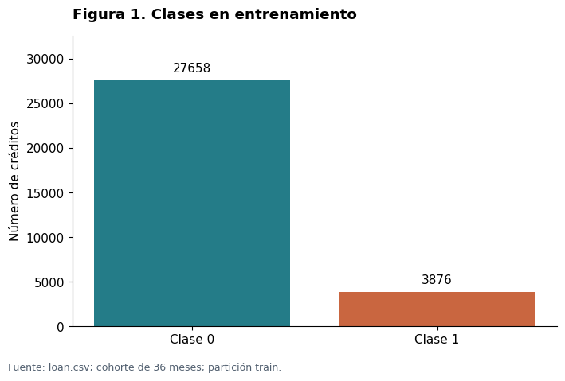
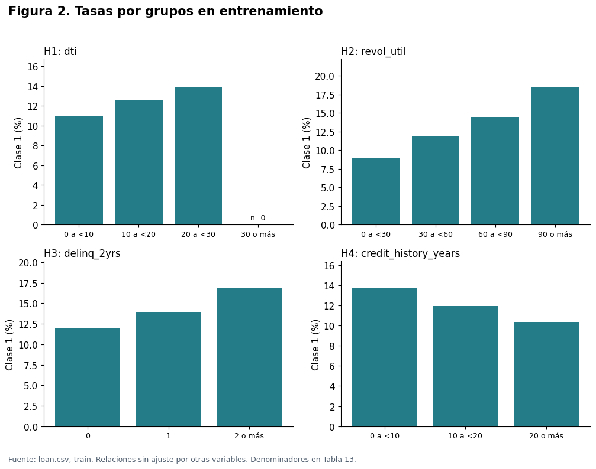
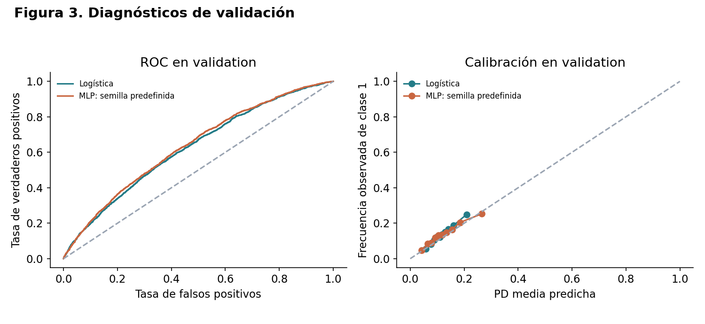
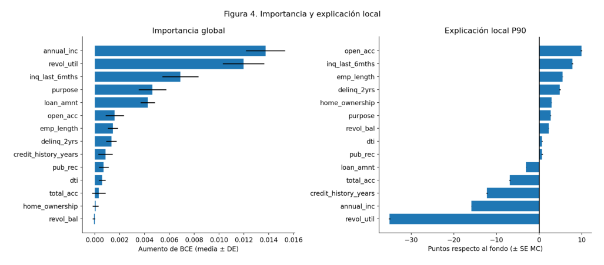
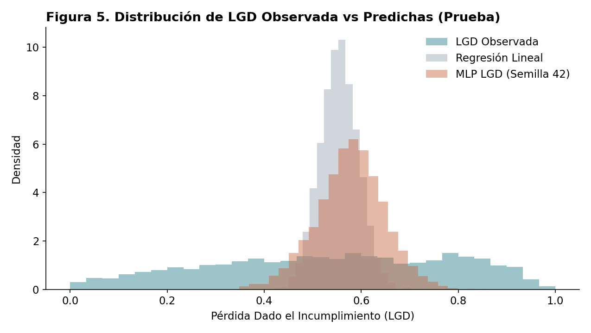

INVESTIGACIÓN APLICADA · RIESGO DE CRÉDITO · 27 OCT 2026
Redes neuronales para la estimación del riesgo de crédito
Comparación de regresión logística y perceptrón multicapa sobre créditos de Lending Club: probabilidad de incumplimiento, scorecard, interpretabilidad y pérdida dado incumplimiento.
RESUMEN
Se estima la probabilidad de incumplimiento (PD) de créditos de Lending Club a 36 meses originados entre 2007 y 2012, comparando una regresión logística (referencia) con un perceptrón multicapa (MLP) bajo particiones temporales, preprocesamiento común y presupuesto de búsqueda explícito. En la prueba temporal (28.458 créditos), el MLP de semilla 42 obtuvo AUC de 0,6257 frente a 0,6183 de la logística; el promedio de 30 semillas fue 0,6223 (DE = 0,0028). La ventaja es pequeña, la discriminación es limitada y las probabilidades subestiman la prevalencia observada (12,6 % frente a 13,6 %). El modelo se expresa como scorecard (600 puntos con odds 20:1 y PDO = 50) y se interpreta con importancia por permutación, escenarios marginales y una aproximación de Shapley.
Palabras clave: riesgo de crédito, scorecard, redes neuronales, datos tabulares, calibración.
01 / CONTEXTO
Introducción y caso de uso
El usuario previsto es un analista de riesgo de una plataforma de crédito de consumo. Al recibir una solicitud, decide si la aprueba, a qué tasa y con qué monto, o si la envía a revisión manual.
La evaluación ocurre en originación. Solo se usan atributos declarados por el solicitante o consultados en su historial en ese momento: monto, ingreso anual, DTI, moras en dos años, consultas en seis meses, cuentas abiertas, registros públicos, saldo y utilización rotativa, cuentas totales, antigüedad del historial, antigüedad laboral, vivienda y propósito.
Se excluyen deliberadamente grade, sub_grade e int_rate (asignados por la plataforma con su propio modelo) y campos posteriores a la originación (total_pymnt, recoveries, out_prncp, last_pymnt_d, entre otros), para evitar fuga de información. Esto explica un AUC modesto, pero coherente con el caso de uso. Las particiones son temporales; además, las probabilidades deben servir para pérdida esperada y puntaje, y el modelo debe poder explicarse.
02 / FUENTE
Datos
Se usó Credit Risk Analysis (Ranadeep, s. f.), con créditos de Lending Club: 887.379 registros y 74 variables, financiados entre junio de 2007 y diciembre de 2015 (issue_d), sin IDs faltantes ni duplicados. La descarga fue del 15 de octubre de 2026. Los significados se contrastaron con el diccionario oficial LCDataDictionary.xlsx, hoja LoanStats; se registró el hash SHA-256 de loan.csv y del diccionario.
Versiones informadas: Python 3.13, pandas 2.2.3, openpyxl 3.1.5, kagglehub 1.0.2 y scikit-learn 1.5.2. Dos discrepancias se resolvieron contra la fuente: total_rev_hi_lim tiene un espacio final en el diccionario (se normaliza), y verification_status figura allí como is_inc_v, por lo que no se usó sin verificar.
03 / ETIQUETADO
Variable objetivo y población
La variable loan_status se codificó según el enunciado. Clase 0: Fully Paid y Does not meet the credit policy. Status:Fully Paid. Clase 1: Charged Off, Default, Late (31–120 days) y Does not meet the credit policy. Status:Charged Off. Los estados Current, Issued, In Grace Period y Late (16–30 days) quedan como NA y se excluyen del entrenamiento.
| Concepto | Valor |
|---|---|
| Registros originales | 887.379 |
| Etiquetables (clase 0 / clase 1) | 268.530 (209.711 / 58.819) |
| Excluidos (NA) | 618.849 |
| Clase 1 entre etiquetables | 21,90 % |
Nota. Elaboración propia a partir de loan.csv (Ranadeep, s. f.).
El 21,90 % no es la tasa de incumplimiento de todos los solicitantes: las cohortes recientes están casi sin etiquetar (92,7 % de 2015 y 68,5 % de 2014 excluidos), por lo que las etiquetas se sesgan hacia créditos cerrados. El experimento principal usa la cohorte de 36 meses financiada hasta diciembre de 2012: 75.004 créditos, 74.959 etiquetados y 45 sin etiqueta.
| Partición | Periodo de originación | Créditos | Uso |
|---|---|---|---|
| Entrenamiento | 2007-06 a 2011-12 | 31.534 | Ajuste de preprocesamiento y modelos |
| Validación | 2012-01 a 2012-06 | 14.967 | Hiperparámetros y parada temprana |
| Prueba | 2012-07 a 2012-12 | 28.458 | Evaluación final única |
Cortes definidos antes del modelamiento. Solo hay créditos otorgados: no se conoce el comportamiento de los rechazados.
La tasa de clase 1 es 12,29 % en entrenamiento (3.876 de 31.534) y 13,61 % en prueba, señal de deriva temporal.

loan.csv, cohorte de 36 meses.04 / HIPÓTESIS
Análisis descriptivo e hipótesis
Se formularon cuatro hipótesis antes de observar resultados y se evaluaron solo en entrenamiento.
| Hipótesis | Grupos | Créditos | Tasa de clase 1 |
|---|---|---|---|
| H1: mayor DTI implica más riesgo | <10 / 10 a <20 / 20 a <30 | 11.014 / 14.757 / 5.763 | 11,0 % / 12,6 % / 13,9 % |
| H2: mayor utilización rotativa implica más riesgo | <30 / 30 a <60 / 60 a <90 / ≥90 | 9.673 / 10.068 / 9.194 / 2.513 | 8,9 % / 11,9 % / 14,5 % / 18,5 % |
| H3: más moras en 2 años implica más riesgo | 0 / 1 / ≥2 | 27.997 / 2.662 / 846 | 12,0 % / 14,0 % / 16,8 % |
| H4: mayor antigüedad crediticia implica menos riesgo | <10 / 10 a <20 / ≥20 años | 10.639 / 16.151 / 4.715 | 13,7 % / 11,9 % / 10,4 % |
El grupo DTI ≥30 está vacío (máximo 29,99). Las relaciones no están ajustadas por otras variables.
Las cuatro direcciones fueron monótonas como se esperaba. Otras diferencias: propósito small_business (24,1 %) y educational (20,0 %) frente a major_purchase (8,4 %) o credit_card (8,6 %); antigüedad laboral ausente (19,8 %).

05 / MODELO
Fundamentación matemática
5.1 Neurona artificial y perceptrón multicapa
Una neurona calcula una suma ponderada más un sesgo y aplica una activación φ. Un MLP encadena capas; la salida binaria usa sigmoide. Una capa oculta suficientemente ancha aproxima funciones continuas en compactos (Hornik et al., 1989).
a = φ(ωᵀx + b)
h⁽⁰⁾ = x; z⁽ˡ⁾ = W⁽ˡ⁾h⁽ˡ⁻¹⁾ + b⁽ˡ⁾; h⁽ˡ⁾ = φ(z⁽ˡ⁾); p = σ(z⁽ᴸ⁾)
La salida usa σ(z) = 1/(1 + e⁻ᶻ), con σ′(z) = σ(z)(1 − σ(z)). Las capas ocultas usan ReLU(z) = max(0,z) o tanh(z) = (eᶻ − e⁻ᶻ)/(eᶻ + e⁻ᶻ). En z = 0 la derivada de ReLU se toma como 0.
5.2 Función de pérdida por máxima verosimilitud
Se supone Yᵢ | xᵢ ~ Bernoulli(pᵢ), pᵢ = P(Yᵢ = 1 | xᵢ), con independencia condicional. La verosimilitud y entropía cruzada binaria son:
L(θ) = ∏ᵢ₌₁ⁿ pᵢʸⁱ(1 − pᵢ)⁽¹⁻ʸⁱ⁾
BCE = −(1/n) Σᵢ₌₁ⁿ [yᵢ ln pᵢ + (1 − yᵢ) ln(1 − pᵢ)]
Minimizar BCE equivale a maximizar verosimilitud. En logística pᵢ = σ(b + xᵢᵀw); en MLP pᵢ = σ(zᵢ⁽ᴸ⁾).
5.3 Retropropagación
Para una muestra con p = σ(z), las derivadas de la pérdida y de la salida dan:
∂ℓ/∂p = −y/p + (1 − y)/(1 − p)
∂p/∂z = p(1 − p)
δ⁽ᴸ⁾ = ∂ℓ/∂z⁽ᴸ⁾ = −y(1 − p) + (1 − y)p = p − y
Por la regla de la cadena, para capas ocultas y parámetros:
δ⁽ˡ⁾ = (W⁽ˡ⁺¹⁾ᵀδ⁽ˡ⁺¹⁾) ⊙ φ′(z⁽ˡ⁾)
∂ℓ/∂W⁽ˡ⁾ = δ⁽ˡ⁾h⁽ˡ⁻¹⁾ᵀ; ∂ℓ/∂b⁽ˡ⁾ = δ⁽ˡ⁾
En minibatch de tamaño m se promedian gradientes (Rumelhart et al., 1986; Goodfellow et al., 2016).
5.4 Optimizadores
SGD con momento μ = 0,9, sin Nesterov: vₜ = μvₜ₋₁ − ηgₜ; θₜ = θₜ₋₁ + vₜ. Adam usa β₁ = 0,9, β₂ = 0,999 y ε = 10⁻⁸:
mₜ = β₁mₜ₋₁ + (1 − β₁)gₜ
vₜ = β₂vₜ₋₁ + (1 − β₂)gₜ²
ηₜ = η √(1 − β₂ᵗ)/(1 − β₁ᵗ)
θₜ = θₜ₋₁ − ηₜ mₜ/(√vₜ + ε)
Esta es la forma operativa de scikit-learn (Pedregosa et al., 2011): la corrección de sesgo se aplica en el paso, lo que cambia la posición de ε respecto al algoritmo original.
5.5 Regularización
Con BCE promedio, penalización L2 logística: J(w,b) = BCE + ||w||²₂/(2nC), con ∇wJ = Xᵀ(p − y)/n + w/(nC). El intercepto no se penaliza; un C pequeño penaliza más.
En MLP, por minibatch: J = BCE + α/(2m)Σₗ||W⁽ˡ⁾||²F y ∇W⁽ˡ⁾J = ∇W⁽ˡ⁾BCE + (α/m)W⁽ˡ⁾. Por tanto α no equivale a 1/C: cambian escala y normalización.
La parada temprana evalúa BCE de validación cada época, conserva el checkpoint de menor BCE y se detiene tras ocho épocas sin mejora mayor que 10⁻⁴. No se usó dropout; se declara como limitación (Srivastava et al., 2014).
5.6 Métricas de evaluación
Se reportan AUC = P(s₁ > s₀) + ½P(s₁ = s₀), Gini = 2·AUC − 1, KS = maxₜ|TPR(t) − FPR(t)| y Brier = (1/n)Σᵢ(pᵢ − yᵢ)². AUC equivale a Mann–Whitney normalizado. Brier depende de calibración, discriminación y prevalencia; una reducción no demuestra por sí sola mejor calibración. La curva de calibración agrupa en deciles de PD predicha con intervalos de Wilson del 95 %.
5.7 Derivación de la scorecard
Sean O las odds de buenos frente a malos: O = (1 − p)/p, y S = A + B ln O. Con 600 puntos para odds O₀ = 20 y PDO = 50:
S(2O) − S(O) = B ln 2 = PDO; B = PDO/ln 2 = 50/ln 2 ≈ 72,135
A = 600 − B ln 20 ≈ 383,90
S = A − B·logit(p); p = σ((A − S)/B)
600 puntos equivalen a p = 1/21 y 650 a p = 1/41. Un puntaje mayor indica menor PD. En logística los puntos por variable se derivan de coeficientes procesados; para MLP el total es exacto, pero los puntos por variable dependen de interacciones y se estiman localmente con Shapley. El percentil se calcula contra entrenamiento.
5.8 Interpretabilidad
La importancia por permutación se calculó en 5.000 filas de validación: diez permutaciones por columna original, manteniendo juntas sus columnas one-hot. Para Shapley se usó un fondo de 32 filas de entrenamiento, f = logit(PDMLP) y 128 órdenes (64 permutaciones y sus inversas). Los puntos locales se obtienen escalando las atribuciones por el factor de la scorecard.
06 / EXPERIMENTO
Metodología experimental
El preprocesamiento, ajustado solo con entrenamiento e idéntico para ambos modelos, imputa numéricas por mediana, añade indicadores de ausencia y estandariza; las categóricas se imputan con “Sin dato” y se codifican one-hot, ignorando categorías desconocidas. Resultan 50 columnas. No hay sobremuestreo ni pesos de clase. La antigüedad crediticia es (issue_d − earliest_cr_line)/12.
La logística evaluó 12 valores de C logarítmicos entre 10⁻⁴ y 10³ (L-BFGS). El MLP hizo búsqueda aleatoria de 12 configuraciones con semilla 42: arquitecturas [16], [32], [32,16], [64,32]; ReLU o tanh; α de 10⁻⁴ o 10⁻²; Adam (0,001; 0,003) o SGD (0,01; 0,03), tres configuraciones por combinación optimizador × activación. Se entrenó por épocas con partial_fit, lotes de 256 y máximo de 100 épocas; la selección fue por menor BCE de validación.
| Familia | Configuraciones | Tiempo búsqueda | Tiempo 30 semillas | Parámetros |
|---|---|---|---|---|
| Regresión logística | 12 | 2,00 s | N/A | 51 |
| MLP | 12 | 18,32 s | 56,34 s | 1.665 ([32]) |
| Total | 54 corridas | 20,32 s | 56,34 s | 76,66 s totales |
Nota. CPU con 1 hilo; tiempos sumados de registros de ejecución. Logística: 50 coeficientes e intercepto. MLP: 50·32 + 32 + 32·1 + 1.
07 / EVALUACIÓN
Resultados
En validación, la logística óptima fue C = 0,0081 (BCE = 0,39067; AUC = 0,6250). El MLP elegido fue [32], tanh, Adam, α = 0,01, η = 0,001 (BCE = 0,38844; AUC = 0,6355). La configuración 11 (SGD) quedó a 0,00001 de BCE, menos que la desviación entre semillas (0,0009).
| Métrica | Media | DE muestral | Mejor | Peor |
|---|---|---|---|---|
| BCE | 0,38994 | 0,00091 | 0,38833 | 0,39189 |
| AUC | 0,63243 | 0,00239 | 0,63550 | 0,62670 |
| Gini | 0,26486 | 0,00478 | 0,27099 | 0,25340 |
| KS | 0,19099 | 0,00514 | 0,20182 | 0,17822 |
| Brier | 0,11612 | 0,00019 | 0,11581 | 0,11656 |
Las 30 corridas terminaron por paciencia en validación.
| Modelo | AUC | Gini | KS | BCE | Brier | PD media |
|---|---|---|---|---|---|---|
| Logística | 0,6183 | 0,2366 | 0,1758 | 0,3890 | 0,1156 | 12,12 % |
| MLP, semilla 42 | 0,6257 | 0,2515 | 0,1844 | 0,3878 | 0,1154 | 12,60 % |
| MLP, media 30 semillas | 0,6223 | 0,2447 | 0,1830 | 0,3889 | 0,1156 | 12,26 % |
| MLP, DE 30 semillas | 0,0028 | 0,0055 | 0,0047 | 0,0009 | 0,0002 | — |
| MLP, peor | 0,6154 | 0,2307 | 0,1703 | 0,3916 | 0,1161 | — |
| MLP, mejor | 0,6258 | 0,2516 | 0,1912 | 0,3873 | 0,1152 | — |
Gini = 2·AUC − 1. Prevalencia observada: 13,61 %.
| Métrica | Media | DE muestral | Mejor | Peor |
|---|---|---|---|---|
| AUC | 0,62233 | 0,00276 | 0,62578 | 0,61537 |
| Gini | 0,24466 | 0,00551 | 0,25157 | 0,23074 |
| KS | 0,18303 | 0,00470 | 0,19118 | 0,17030 |
| Brier | 0,11556 | 0,00018 | 0,11522 | 0,11612 |
| BCE | 0,38886 | 0,00086 | 0,38734 | 0,39156 |
La semilla 42 queda cerca del mejor valor de las 30 corridas; la media es la referencia más conservadora. El bootstrap pareado estratificado (300 réplicas) dio ΔAUC (MLP menos logística) = 0,0074, IC 95 % [0,0032; 0,0121]. Para Brier, el intervalo incluyó cero. Usar la media reduce la ventaja a ≈0,0040 AUC. Las curvas ROC son casi coincidentes y ambos modelos subestiman prevalencia.

08 / ESCALA DE RIESGO
Scorecard
Con A ≈ 383,90 y B ≈ 72,135, esta conversión por unidad corresponde a la logística. La transformación es monótona y conserva calibración: no añade poder predictivo.
| Variable procesada | Coeficiente β | Puntos por unidad |
|---|---|---|
| Score base del modelo | — | 525,02 puntos |
| numericas__loan_amnt | 0,0715 | −5,16 |
| numericas__annual_inc | −0,2819 | +20,33 |
| numericas__dti | 0,0336 | −2,43 |
| numericas__delinq_2yrs | 0,0835 | −6,02 |
| numericas__inq_last_6mths | 0,3036 | −21,9 |
| numericas__open_acc | 0,0582 | −4,2 |
| numericas__pub_rec | 0,0984 | −7,1 |
| numericas__revol_bal | 0,0930 | −6,71 |
| numericas__revol_util | 0,2736 | −19,73 |
| numericas__total_acc | −0,1001 | +7,22 |
| numericas__credit_history_years | −0,0814 | +5,87 |
| categoricas__emp_length_Sin dato | 0,3018 | −21,77 |
| categoricas__purpose_credit_card | −0,3839 | +27,69 |
| categoricas__purpose_small_business | 0,5134 | −37,03 |
Puntaje: S = A + B ln((1 − p)/p). El percentil individual se calcula frente a puntajes de entrenamiento.
09 / EXPLICABILIDAD
Variables de riesgo e interpretación
La permutación en validación destacó annual_inc (ΔBCE = 0,0137), revol_util (0,0120) e inq_last_6mths (0,0069). En 2.000 filas, escenarios marginales indican mayor PD con más utilización (7,87 % a 18,57 %), más moras (12,33 % a 16,33 %) y mayor monto; y menor PD con más ingreso e historial más largo (15,09 % a 11,05 %). DTI no fue monótono (13,06 % a 12,92 %).
| Hipótesis | Descriptivo (train) | Modelo MLP | Veredicto |
|---|---|---|---|
| H1: DTI | Creciente | No monótono | Confirmada solo descriptivamente; efecto marginal débil o absorbido por otras variables |
| H2: utilización | Creciente | Creciente | Confirmada |
| H3: moras | Creciente | Creciente | Confirmada |
| H4: antigüedad | Decreciente | Decreciente | Confirmada |
Se evalúan direcciones, no causalidad ni significancia.

10 / LECTURA DE RESULTADOS
Discusión y aprendizajes
El MLP mejoró AUC (+0,004 a +0,007) y BCE, pero usa 1.665 frente a 51 parámetros, requiere más cómputo y tiene menor interpretabilidad directa. El IC de Brier incluye cero y la variabilidad entre semillas (DE 0,0028) es comparable a la mejora. Esto concuerda con la literatura sobre datos tabulares: las redes no superan sistemáticamente a modelos más simples ni a árboles (Grinsztajn et al., 2022; Shwartz-Ziv & Armon, 2022).
- El mayor riesgo metodológico fue el desenlace: filtrar por plazo y año evita etiquetas inmaduras.
- Excluir
grade,int_ratey campos de pago es coherente con el caso, aunque limita el AUC a ≈0,62. - Hay deriva temporal (12,3 % a 13,6 %); ambos modelos subestiman la PD.
- Una sola semilla no distingue configuraciones separadas por menos de una DE.
- Reportar la media de 30 semillas, y no la mejor, evita optimismo.
- Un DTI descriptivamente creciente puede no ser monótono tras ajustar por otras variables.
- Los resultados no autorizan decisiones automáticas de aprobación sin validación adicional.
11 / PÉRDIDA
Pérdida dado incumplimiento (LGD)
La LGD de créditos que incumplieron se estimó con regresión lineal (referencia) y MLP. En prueba temporal, la regresión lineal fue mejor (MAE 0,2076 frente a 0,2140; RMSE 0,2476 frente a 0,2579), con 51 frente a 5.377 parámetros. Ninguno mejora apreciablemente a predecir una constante. La pérdida esperada total fue USD 24,19 millones, 7,26 % de la exposición.
11.1 Variable objetivo y límites
La LGD es la fracción de exposición finalmente perdida. Para los créditos de clase 1:
LGDbruta = 1 − (total_rec_prncp + recoveries − collection_recovery_fee) / funded_amnt
LGD = min(max(LGDbruta, 0), 1)
| Campo | Definición | Rol |
|---|---|---|
| funded_amnt | Monto total comprometido | Denominador: exposición original |
| total_rec_prncp | Principal recibido a la fecha | Recuperado vía pagos |
| recoveries | Recuperación bruta posterior al castigo | Gestión de cobro |
| collection_recovery_fee | Comisión posterior al castigo | Costo descontado de recuperaciones |
La cohorte LGD son 9.813 créditos de clase 1 con las mismas particiones. out_prncp no sirve de denominador: los 45.248 créditos Charged Off del conjunto completo tienen saldo 0 porque se retira al castigar. funded_amnt incluye principal ya amortizado; no se descuentan flujos ni intereses (total_rec_int), y las recuperaciones pueden seguir incompletas. El acotamiento a [0,1] puede crear masa en los extremos; es LGD contable, no económica.
| Partición | Créditos | Media | Mediana | Desviación estándar |
|---|---|---|---|---|
| Entrenamiento | 3.876 | 0,5703 | 0,6038 | 0,2559 |
| Validación | 2.063 | 0,5454 | 0,5619 | 0,2496 |
| Prueba | 3.874 | 0,5313 | 0,5446 | 0,2450 |
La media baja con el tiempo (57,0 % a 53,1 %), señal de deriva.
11.2–11.3 Modelos y pérdida
La referencia es regresión lineal por mínimos cuadrados, con las mismas 50 columnas y particiones: 51 parámetros, MAE = 0,21034 y RMSE = 0,24703 en validación. El MLPRegressor supone una salida normal de varianza constante; maximizar verosimilitud equivale a minimizar MSE. Usa salida identidad y las predicciones se proyectan a [0,1] después del entrenamiento.
La normal permite valores fuera de [0,1] y el acotamiento posterior no interviene en los gradientes. Se proponen, como mejora no implementada, salida sigmoide con cuasi-verosimilitud Bernoulli de respuesta fraccional (Papke & Wooldridge, 1996) o verosimilitud beta (Ferrari & Cribari-Neto, 2004).
11.4 Búsqueda y presupuesto
Se evaluó malla de 32 configuraciones: arquitecturas [16], [32], [32,16], [64,32]; ReLU/tanh; α de 10⁻⁴ o 10⁻²; tasas 0,001 o 0,003. La búsqueda tomó 32,21 s; dos configuraciones llegaron al máximo de 100 iteraciones. La mejor por MAE de validación fue [64,32], tanh, α = 10⁻⁴, η = 0,003 (MAE = 0,21020). Se entrenó además con 30 semillas (42–71).
| Familia | Configuraciones | Tiempo | Parámetros |
|---|---|---|---|
| Regresión lineal | 1 | 0,1288 s | 51 |
| MLP | 32 más 30 semillas | 32,21 s búsqueda; 39,44 s semillas | 5.377 |
11.5 Evaluación
MAE = (1/n)Σ|yᵢ − ŷᵢ| y RMSE = √[(1/n)Σ(yᵢ − ŷᵢ)²]. Predecir siempre la media LGD de entrenamiento (0,5703) da RMSE aproximado de 0,2481.
| Métrica | Media | DE | Mejor | Peor |
|---|---|---|---|---|
| MAE | 0,21400 | 0,00166 | 0,2102 | 0,21748 |
| RMSE | 0,25309 | 0,00218 | 0,2494 | 0,25768 |
Regresión lineal en validación: MAE = 0,21034; RMSE = 0,24703.
| Modelo | Parámetros | MAE | RMSE |
|---|---|---|---|
| Regresión lineal (referencia) | 51 | 0,20762 | 0,24761 |
| MLP, semilla 42 | 5.377 | 0,21396 | 0,25788 |
| Constante: media de entrenamiento | 1 | 0,20782 | 0,24806 |
El MLP no supera a la lineal: MAE medio de validación 0,2140 frente a 0,2103; en prueba, +0,0063 MAE y +0,0103 RMSE. La ventaja de 0,00014 de la mejor configuración en validación es menor que la variación entre semillas (0,00166). Con estos 14 predictores de originación ningún modelo demuestra capacidad predictiva apreciable para LGD.

11.6 Exposición y pérdida esperada
La pérdida esperada combina PD, LGD y EAD. Se definió EAD = funded_amnt, coherente con el denominador de LGD; una alternativa sería estimar saldo amortizado esperado con el plan de pagos y redefinir LGD.
E[L]ᵢ = PDᵢ × LGDᵢ × EADᵢ
| Concepto | Valor |
|---|---|
| Créditos | 28.458 |
| Exposición total (EAD) | USD 333.394.250 |
| Pérdida esperada total | USD 24.189.093 |
| Pérdida esperada sobre EAD | 7,26 % |
| Pérdida esperada promedio por crédito | USD 849,99 |
| Pérdida esperada mediana por crédito | USD 639,74 |
La prevalencia por la LGD media de prueba da 13,61 % × 53,13 % ≈ 7,23 %, cercano al 7,26 %, pero no valida el modelo: PD subestima prevalencia y LGD puede sobrestimarla, compensando errores. La comprobación apropiada es la pérdida realizada ponderada por EAD en prueba.
11.7 Discusión de la Parte 2
La red no aportó mejora medible: peores MAE y RMSE que la referencia, 105 veces más parámetros (5.377 frente a 51), búsqueda de 32,21 s frente a un ajuste lineal y DE de semillas de 0,0017 en MAE. La LGD depende de gestión de cobro, garantías y tiempos posteriores al impago, datos no disponibles en originación. EAD y denominador LGD deben decidirse conjuntamente; errores compensados pueden producir una pérdida agregada aparentemente correcta.
12 / TRANSPARENCIA
Uso de inteligencia artificial
Se usó Google Gemini 3 mediante Antigravity para estructurar el cuaderno, redactar explicaciones, acelerar código de evaluación y revisar derivaciones matemáticas. Los prompts principales fueron:
- “Diseña el protocolo de comparación justa en Python fijando particiones temporales según la fecha de originación issue_d, preprocesadores comunes con ColumnTransformer (imputación por mediana, banderas de ausencia, escalamiento estándar y one-hot encoding) y control estricto de semillas aleatorias.”
- “Deriva algebraicamente el factor de escala B y el desplazamiento A para una scorecard de riesgo de crédito configurada a 600 puntos base, Odds de referencia 20:1 y PDO = 50, y muestra cómo proyectar la salida logit de una red neuronal a esta escala.”
- “Implementa en Python el cálculo de importancia por permutación sobre la función de pérdida Entropía Cruzada Binaria (BCE) con 10 repeticiones bootstrap en validación, y construye una aproximación de valores de Shapley con 128 órdenes de permutación sobre un fondo de 32 filas de entrenamiento.”
- “Escribe la fundamentación matemática en LaTeX para la derivación de la Entropía Cruzada Binaria desde Máxima Verosimilitud, el algoritmo de retropropagación con regla de la cadena para capas ocultas, y las ecuaciones de actualización de los optimizadores SGD con momentum y Adam.”
El uso aceleró el pipeline, la redacción y generación de tablas Markdown/LaTeX, pero exigió verificar cada fórmula, variable y referencia contra fuentes primarias: diccionario oficial, documentación de scikit-learn 1.5.2 y artículos originales.
En código se corrigió el mapeo de variables (incluida la confusión is_inc_v/verification_status), se ajustaron intervalos de Wilson al 95 %, se separaron las escalas de regularización C y α y se implementaron 30 semillas independientes. En texto se corrigieron signos de la scorecard, afirmaciones categóricas de superioridad de redes neuronales y citas con datos incorrectos.
13 / VERIFICACIÓN
Cacería de la alucinación
- Equivalencia L2. La sugerencia α = 1/C para trasladar C = 0,0081 provocó que el MLP ignorara variables. Las penalizaciones se escalan distinto (global frente a minibatch); no hay equivalencia directa y cada modelo requiere búsqueda propia.
- Signo de scorecard. La fórmula p/(1−p) asignaba puntajes altos a p = 0,90. Con odds de buenos frente a malos, S = A + B ln((1−p)/p) = A − B·logit(p); más puntaje significa menor PD.
- Nombre de columna. “verification_status” produjo KeyError; el diccionario fuente registra
is_inc_v. Se validó el nombre contra el archivo original. - Cita inexistente. La referencia Siddiqi (2012), Credit Risk Scorecards: Advanced Analytics, no se encontró. Se sustituyó por Siddiqi (2017), Intelligent Credit Scoring, segunda edición.
- Superioridad del MLP. La afirmación de mejoras contundentes no coincidía con variabilidad: el peor AUC del MLP (0,6154) fue inferior al 0,6183 de logística. Se reportaron 30 semillas y ventaja modesta.
14 / RECURSOS
Enlaces
- Repositorio Git: Trabajo02RedesNeuronales.
- Aplicación web: Scoring crediticio en Streamlit.
- Video promocional: el documento indica “[completar]”.
- Código Parte 1, código Parte 2 y aplicación interactiva.
BIBLIOGRAFÍA
Referencias
- Basel Committee on Banking Supervision. (2006). International convergence of capital measurement and capital standards: A revised framework (comprehensive version). Bank for International Settlements. https://www.bis.org/publ/bcbs128.pdf
- Brier, G. W. (1950). Verification of forecasts expressed in terms of probability. Monthly Weather Review, 78(1), 1–3. DOI
- Ferrari, S., & Cribari-Neto, F. (2004). Beta regression for modelling rates and proportions. Journal of Applied Statistics, 31(7), 799–815. DOI
- Fisher, A., Rudin, C., & Dominici, F. (2019). All models are wrong, but many are useful: Learning a variable’s importance by studying an entire class of prediction models simultaneously. JMLR, 20(177), 1–81. Artículo
- Goodfellow, I., Bengio, Y., & Courville, A. (2016). Deep learning. MIT Press.
- Grinsztajn, L., Oyallon, E., & Varoquaux, G. (2022). Why do tree-based models still outperform deep learning on typical tabular data? Advances in Neural Information Processing Systems, 35, 507–520.
- Hornik, K., Stinchcombe, M., & White, H. (1989). Multilayer feedforward networks are universal approximators. Neural Networks, 2(5), 359–366. DOI
- Kingma, D. P., & Ba, J. (2015). Adam: A method for stochastic optimization. 3rd International Conference on Learning Representations (ICLR 2015). https://doi.org/10.48550/arXiv.1412.6980
- Liu, D. C., & Nocedal, J. (1989). On the limited memory BFGS method for large scale optimization. Mathematical Programming, 45(1–3), 503–528. DOI
- Loterman, G., Brown, I., Martens, D., Mues, C., & Baesens, B. (2012). Benchmarking regression algorithms for loss given default modeling. International Journal of Forecasting, 28(1), 161–170. DOI
- Lundberg, S. M., & Lee, S.-I. (2017). A unified approach to interpreting model predictions. Advances in Neural Information Processing Systems, 30, 4765–4774.
- Papke, L. E., & Wooldridge, J. M. (1996). Econometric methods for fractional response variables with an application to 401(k) plan participation rates. Journal of Applied Econometrics, 11(6), 619–632. DOI
- Pedregosa, F., Varoquaux, G., Gramfort, A., Michel, V., Thirion, B., Grisel, O., Blondel, M., Prettenhofer, P., Weiss, R., Dubourg, V., Vanderplas, J., Passos, A., Cournapeau, D., Brucher, M., Perrot, M., & Duchesnay, É. (2011). Scikit-learn: Machine learning in Python. Journal of Machine Learning Research, 12, 2825–2830.
- Ranadeep. (s. f.). Credit risk analysis [Conjunto de datos]. Kaggle. Dataset
- Rumelhart, D. E., Hinton, G. E., & Williams, R. J. (1986). Learning representations by back-propagating errors. Nature, 323(6088), 533–536. DOI
- Shwartz-Ziv, R., & Armon, A. (2022). Tabular data: Deep learning is not all you need. Information Fusion, 81, 84–90. DOI
- Siddiqi, N. (2017). Intelligent credit scoring: Building and implementing better credit risk scorecards (2.ª ed.). Wiley.
- Srivastava, N., Hinton, G., Krizhevsky, A., Sutskever, I., & Salakhutdinov, R. (2014). Dropout: A simple way to prevent neural networks from overfitting. Journal of Machine Learning Research, 15(56), 1929–1958.
- Wilson, E. B. (1927). Probable inference, the law of succession, and statistical inference. Journal of the American Statistical Association, 22(158), 209–212. https://doi.org/10.1080/01621459.1927.10502953